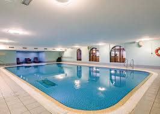
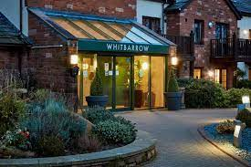
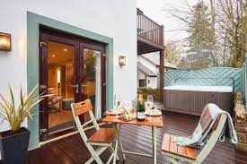

Come and visit the stunning Whitbarrow village in the heart of the Cumbrian countryside, nestled in the beautiful Lake District.
  Stay from 3 nights in one of our striking self contained lodges
Why not come and relax in the quiet, peaceful surrounds with vast open space around? Listen to the birds and enjoy the tranquility with a glass of wine.
Whitbarrow provides onsite facilites inculded in your stay. Enjoy a morning swim or a total relaxation in the jacuzzi, steam room and sauna. Play a round of mini golf and take an adventure on our woodland walks.
Reception will provide you with weekly activites and direct you to the Eden bar and restaurant for a taste of our award winning menus.
Ask about our timeshares
Whitbarrow offers timeshares to allow you to come and enjoy the tranquility over and over again. The timeshares can be created to suit you and your family. Tell us how we can make your stay more enjoyable and we create a personalised agreement.